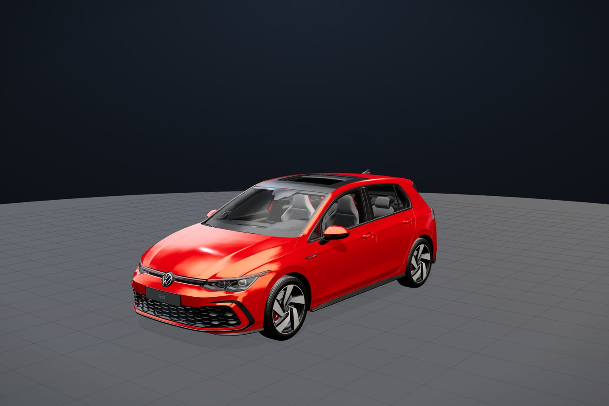
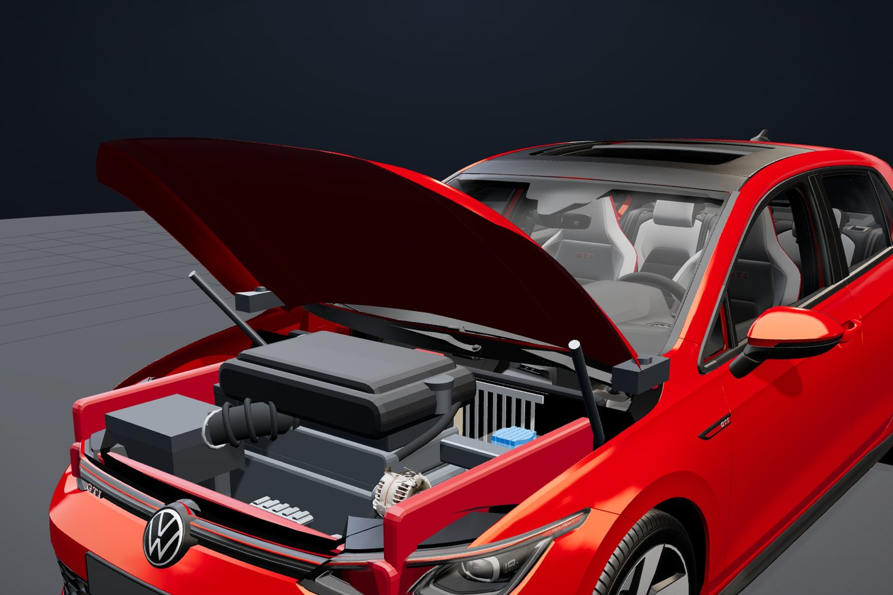
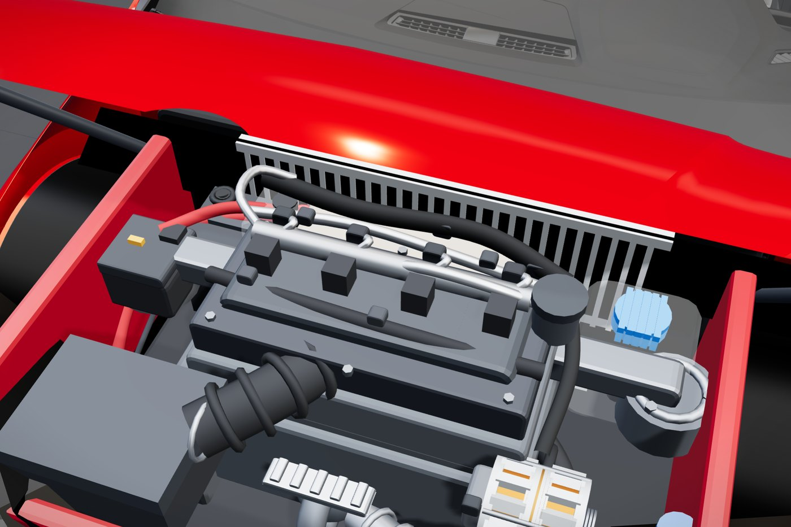
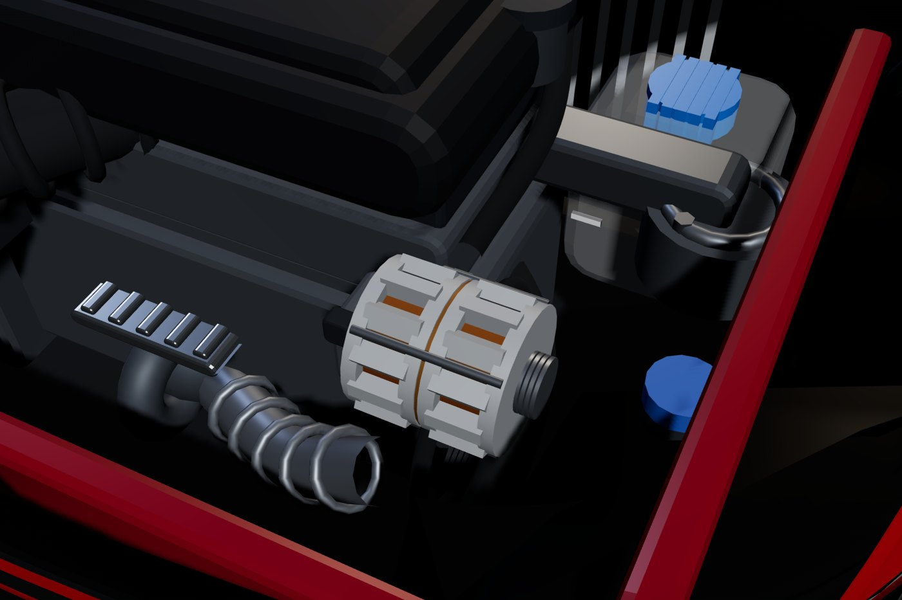

Strip Bay · Volkswagen Golf Mk8 GTI
Training Simulator
Diagnose it, fix it, prove it. The next stage stays locked until this one is right.
Loading the 3D simulator…
Meter readings and measurements are simulation values. On a real car, the workshop data governs. Read Safety before your first job.
Loading the 3D simulator…
Volkswagen Golf Mk8 GTI
Workshop Manual
The written procedures behind the simulator, in the order that keeps you safe.

Electrical
Chassis and body
Before you start
Three things that hurt people
Each one is the reason a job in this manual is written in the order it is.
The starter feed is live at all times
The heavy cable on the starter carries hundreds of amps straight from the battery positive. On most cars it has no fuse and no switch in it. Treat it as unfused and always live. Slacken its nut with the battery connected, let the spanner touch the block, and the spanner is a dead short across the battery. It welds in place and glows, the insulation melts, and the battery can vent.
- Negative, off first and on last. It is the earth side. A spanner that touches the body while you are on it does nothing.
- Positive, off last and on first. Undo it first and every earthed surface in reach becomes a short across the battery.
An airbag is a pyrotechnic device
The driver's airbag holds a propellant charge that fills the bag in around thirty milliseconds. The airbag control unit keeps a reserve charge on purpose, so the bag still fires in a crash that has already destroyed the battery. That same reserve can fire it on the bench after you disconnect the battery. Isolate, wait the time the workshop data states, then work.
A meter passes its own test current through whatever it measures, and that can be enough to fire the igniter. Those circuits are tested with the manufacturer's equipment or not at all.
Brakes have no second chance
Anything else on this car can be left half-finished overnight. Brakes cannot. Work in axle pairs, torque the fasteners instead of guessing, and pump the pedal firm before the car moves. The pistons have been pushed back, and the first press only takes up the gap.
Engine
Under the bonnet
A modern GTI shows you a moulded cover and very little else. The cover comes off first on almost every job.


The vehicle file has no engine in it, so this bay is constructed: a transverse four with the parts where they sit on a car of this class. It is not a measured copy of this car's EA888. The body, glass, wheels and cabin around it are the real vehicle model.
Reading the bay
Fuel rail. This engine injects fuel directly into the cylinders at high pressure. That is why the rail and its lines are steel, not rubber, and why nobody cracks one of those unions casually.
Where the big electrical parts are. The starter sits low, at the joint between engine and gearbox. The alternator is on the accessory belt at the other end. The battery and its fuse carrier sit to one side of the bay.
This car is left-hand drive. On a transverse engine, which side a part is on and which way you reach it can change with the drive side and the gearbox. Take access notes from the workshop data for that exact car, this manual included.
Electrical
Starter motor removal
The mechanism is not the hard part. The cable is.
- Main feed, terminal 30. Battery positive to the starter. Hundreds of amps, live at all times.
- Solenoid. The copper stud takes the main feed. When triggered, heavy contacts inside connect it to the motor.
- Start signal to terminal 50. A thin wire, live only while cranking.
- Fuse. The trigger circuit is fused. The main feed normally is not.
- Motor. Earths through its case to the engine block, and back to battery negative.
- Terminal 30, the main stud. Copper, with the heavy red cable.
- Terminal 50, the trigger. The small connector on the solenoid.
- Flange bolts, usually two. They clamp the mounting ear to the bellhousing. Count them on the car.
- Withdraw along the starter's own axis. The nose has to clear the bellhousing before the body can move any other way.
- Pinion. It is thrown into the flywheel ring gear to crank, and pulls back out when the engine fires.
Procedure
Look the job up
Where it sits on this engine and gearbox, the access route, and what holds it. The route differs between variants, and the workshop data gives it.
Disconnect the battery
Negative first, lead secured so it cannot spring back. Every step after this one is unsafe without it.
Support the starter
It weighs a few kilos. Take its weight before it is loose, not after, especially if you are working from underneath.
Main cable off terminal 30
Slacken the nut, lift the cable clear and insulate the end with its boot or a rag. A live cable end resting on the block is the same short, just later.
Trigger wire off terminal 50
Pull the connector body, not the wire. Heat-cycled crimps tear out of their terminals.
Flange bolts out
With the motor supported. If you can reach it, remove the upper bolt first so the weight stays on the lower one.
Withdraw the starter
Straight out along its axis until the pinion clears the bellhousing.
Take the bolts out first and a few kilos of starter drops and hangs on a live main cable. That is a short and a falling part at the same moment, often above your face.
Refitting
Bolts to torque. Main nut tight with its insulating boot back over the stud. Trigger connector on. Battery last.
If the motor now spins but the engine does not turn, the pinion is not engaging. That is a drive fault, not a fitting error, and it is far easier to find before everything else goes back on.
| Fastener | Figure | Source |
|---|---|---|
| Starter flange bolt | — | Not established |
| Terminal 30 nut | — | Not established |
Electrical
Charging system
While the engine runs, the alternator powers the car. The battery only buffers it.

- Pulley. Belt-driven, spinning the rotor at several times crank speed.
- Rotor. Interlocking claw poles around a field winding. It carries the magnetism and makes no output current.
- Stator. Fixed in the housing, around the rotor. Its three windings are where the output is generated.
- Slip rings and brushes. Feed the field winding while it turns. Worn brushes mean no field and no output.
- Regulator. Varies the field current to hold, or on newer cars follow, the commanded voltage.
- Rectifier and B+ stud. Six diodes turn three-phase AC into DC for the car.
Four readings
Engine off: DC volts across the battery posts
A fully charged, rested battery reads about 12.5 to 12.8 V (typical of class). Well below that, you are diagnosing the battery, not the charging system.
Engine running: the same two points
With some load on (headlights, blower, heated rear screen), the voltage should rise clearly above the rested figure. If it does not move under load, the alternator is not contributing.
Alternator B+ stud to earth
Same as the battery: the machine is making nothing. More than a few tenths higher than the battery: output is being made but not arriving. That is a cable or connection, not the alternator.
AC volts at the B+ stud
A healthy machine shows very little AC. A failed diode shows a clear AC component, and a smaller one at the battery.
On many recent VWs the engine computer sets the alternator's target voltage and lowers it when the battery is full. A running voltage close to the rested figure with no load is not, on its own, a fault. Load the system before you judge it, and check how the car you are on controls its charging.
How it makes DC
The rotor's field winding is fed through the slip rings and brushes. Spinning, its field sweeps past three stator windings set a third of a turn apart, so each makes an alternating voltage peaking 120° after the last. Six diodes, two per phase, pass whichever phase is highest to the output and whichever is lowest to earth.
Two things follow, and they cover most alternator diagnosis. The rotor makes no current, so worn brushes or an open field give a machine that spins freely and generates nothing. And losing one diode leaves a gap in the waveform: the DC reading stays roughly right, but the AC ripple jumps.
"But the battery is nearly new." Usually true, and not the point. An alternator that has stopped charging runs the car off the battery until it is flat. Dim lights, a warning lamp and a flat battery in the morning are battery symptoms caused by a charging fault. Test the charging system before anyone buys a second battery.
| Item | Figure | Source |
|---|---|---|
| Rested battery, fully charged | ≈ 12.5–12.8 V | Typical of class |
| Alternator pulley nut | — | Not established |
Chassis and body
Front brakes
Pads and discs, in axle pairs, with every fastener torqued.
- Disc. Vented on the front. Its minimum thickness is marked on the disc.
- Pads. Friction material on a steel backing plate. Grease never touches the friction face.
- Piston and fluid. One piston, on the inboard side only. Pedal pressure pushes it against the inboard pad.
- Caliper body. The reaction slides it inboard, and its fingers pull the outboard pad onto the disc.
- Guide pins. They bolt the caliper to the carrier, which is fixed to the hub. The caliper floats on them.
- Flexible hose. A pressure part. Never let the caliper hang on it.
Procedure
Slacken the wheel bolts on the ground
A wheel already in the air turns when you push on the bar.
Raise and support
Axle stands under the manufacturer's lifting points. A trolley jack lifts. It never holds.
Wheel off, then look first
Hose condition, disc face, the inboard pad, and any sign the caliper has been dragging.
Caliper off and hung up
Remove the guide bolts and lift the caliper off the carrier. Hang it from the spring with a hook or tie. Never leave it hanging on the hose: stretching it damages it inside, where you cannot see.
Push the front piston back
Watch the brake fluid reservoir while you do it, because the fluid has to go somewhere.
Measure the disc
With a micrometer, at several points. A vernier bridges the worn lip at the edge and reads too thick. Below the minimum marked on the disc, replace it, in axle pairs.
Fit the new pads
Grease only where the instructions for that caliper allow it, usually the slide points. Some backing plates and shims are meant to stay dry.
Caliper back on and torqued
Small bolts into a cast carrier strip easily. Use the torque wrench, not your wrist.
Wheel on, torqued in a star
Start every bolt by hand. Snug them in a star, lower the car, then torque in the same star. Going round the circle can pull the wheel off-square.
Pump the pedal firm before the car moves
The pistons are fully back. The first press only takes up the gap.
The Mk8 has an electric parking brake. Each rear caliper has a motor that drives its piston. The rear pistons are retracted by putting the system into service mode with a diagnostic tool, never by winding or pressing. Forcing one damages the motor unit.
Why the fronts wear faster
Under braking, weight transfers forward. The front tyres then have the most grip, so the front brakes are sized to do most of the work, and their pads wear faster than the rears. Check the rears anyway: on a car with an electric parking brake they can seize without the driver noticing.
| Fastener | Figure | Source |
|---|---|---|
| Front caliper guide bolt | ≈ 30 Nm | Typical of class |
| Road wheel bolt | ≈ 120 Nm | Typical of class |
Chassis and body
Mirror and door lock
Both jobs catch people out in the same way: the fixings are inside the door.
Door mirror
The mirror's fixings and its electrical connector are reached from inside the door, behind the trim at the front corner of the window, not through the mirror glass. Prising at the glass for fixings that are not there breaks the glass and its heater element. A power-folding mirror has a motor behind it too.
Door lock
The latch unit comes out through an access aperture in the door, so the door card and moisture barrier come off first. Release the inner handle cable and the outer handle linkage at the latch end, keeping their retainers intact. Unplug the central-locking connector before the latch screws come out.
- Striker. A loop bolted to the door pillar. The latch closes around it.
- Claw. The striker pushes it round as the door shuts, and its slot traps the striker.
- Pawl. It drops against the claw and stops it turning back. The pawl holds the door shut, not the claw.
- Release linkage. Either handle lifts the pawl. The claw is sprung and swings open.
The moisture barrier behind the door card is doing a job. Torn or left loose, it lets water into the speaker, the loom and the carpet. The job is finished when the barrier is sealed and the door opens from inside and outside, locks and unlocks.
Chassis and body
Steering wheel and airbag
This order is a safety procedure, not a convenience.
- Airbag module. Comes off first. Carry it face up and set it down face up.
- Alignment marks. Mark the wheel to the column before the bolt comes out.
- Centre bolt. Often single-use, and often torque plus an angle. Both come from the data.
- Steering wheel. Comes off the splines once the bolt is out.
- Clock spring. A coiled ribbon cable. Keep it centred while the wheel is off.
Procedure
Look up the procedure
Including this vehicle's stand-down time after isolating.
Isolate the battery and wait the stated time
The airbag unit's reserve charge is why. See Safety.
Centre the steering and lock it
The clock spring keeps the horn, wheel controls and airbag connected while the wheel turns. With the wheel off it can be turned past its travel and torn: a fault code and a new part.
Release and remove the airbag module
Face up in your hands, face up on the bench. If it fires face down, it launches itself. Face up, it inflates into the air.
Mark the wheel to the column
Splines let a wheel go back on in more than one position. One spline out is a wheel that sits crooked on a straight road, and chasing the alignment will not find it.
Centre bolt out, wheel off
Leave the clock spring where it is.
Yellow connectors are a hint that you are near airbag wiring, not a reliable way to identify every circuit. Whatever the colour: no ordinary multimeter across an igniter circuit, ever.
| Item | Figure | Source |
|---|---|---|
| Steering wheel centre bolt, torque and angle | — | Not established |
| Stand-down time after isolating | — | Not established |
Engine
How the engine turns
Turn the crank and watch all four cylinders at once.
The four strokes
Intake. Inlet valve open, piston going down, air drawn in. This engine injects fuel directly into the cylinder, so the mixture is made in the cylinder, not on the way in.
Compression. Both valves shut, piston up, the charge squeezed into a fraction of its volume so it burns quickly and completely. Detonation is the failure, not the aim.
Power. Spark near the top. The gas expands and drives the piston down. It is the only stroke that does work. Flywheel inertia and the other cylinders carry the other three.
Exhaust. Exhaust valve open, piston up, burnt gas pushed out.
Three consequences worth knowing
Two crank turns per cycle, so the camshafts turn at half crank speed. With the cam timing wrong, a valve can still be open when a piston arrives. Timing is set to the marks and checked. It is never eyeballed.
Pistons move in pairs, half a cycle apart. 1 and 4 rise and fall together, as do 2 and 3, but each pair is 360° apart in the cycle. When one of a pair is on its power stroke, the other is on intake. Watch the diagram at 0°.
Valve overlap. Near the top of the exhaust stroke both valves are briefly open. The outgoing exhaust helps draw the next charge in. That is a large part of why an engine breathes better at some speeds than others.
Reference
Numbers and sources
What every figure in this manual rests on, and what it does not have yet.
From our own parts data. The prefix is the generation and the first thing to check: a part that fits the shape can still be for a different car. Check every number against the VIN before ordering.
| Part | Number | Years |
|---|---|---|
| Bonnet | 5H0 823 031 | 2019–2026 |
| Front wing, left | 5H0 953 051 | 2019–2026 |
| Front wing, right | 5H0 953 052 | 2019–2026 |
| Front bumper cover | 5H0 807 221 | 2019–2026 |
| Headlight, left | 5H0 941 005 | 2019–2026 |
| Headlight, right | 5H0 941 006 | 2019–2026 |
| Radiator | 5H0 121 253 | 2019–2026 |
| Part | Number | Years | Fits |
|---|---|---|---|
| Front brake pad set, GTI | 5G0 698 151 B | 2013–2020 | Mk7 |
| Front discs, vented 312 mm | 5Q0 615 301 H | 2012–2022 | Mk7 |
| Front door lock mechanism, right | 5K0 837 016 F | 2008–2013 | Earlier Golf |
| Door mirror, left | 1K1 857 507 C | 2003–2014 | Earlier Golf |
The newest front pad set our data holds for a Golf GTI is a Mk7 part. It is listed to show the family, not as the answer for a Mk8.
The Mk5 (type 1K, 2003–2009) is the car our parts data covers job for job. Every illustration in this manual is a Mk8. The job order carries over; the pictures do not.
| Part | Number | Years | Note |
|---|---|---|---|
| Starter motor | 02T 911 024 E | 2003–2014 | Numbered by gearbox family |
| Alternator | 06F 903 023 C | 2003–2014 | Petrol |
| Alternator, 140 A | 03L 903 023 A | 2008–2016 | 2.0 TDI |
| Part | Number | Years | Note |
|---|---|---|---|
| Front pad set | 1K0 698 151 G | 2003–2013 | |
| Front pad set, alternative | 1K0 698 151 E | 2003–2013 | |
| Rear pad set | 1K0 698 451 G | 2003–2013 | |
| Front disc, 288 mm | 1K0 615 301 R | 2003–2012 | Check the disc size first |
| Front discs, vented 312 mm, pair | 1K0 615 301 AA | 2004–2013 | GTI and heavier variants |
| Front disc, Febi | 1K0 615 301 AQ | — | Aftermarket |
| Rear disc, Febi | 1K0 615 601 AJ | — | Aftermarket |
The Mk5 was built with more than one front disc diameter, and the pads differ with them. A 288 mm set will not go on a 312 mm car.
| Part | Number | Years |
|---|---|---|
| Front door lock mechanism, right | 1K0 837 016 G | 2003–2012 |
| Door mirror, left | 1K1 857 507 C | 2003–2014 |
| Door mirror, right | 1K1 857 508 C | 2003–2014 |
| Window motor, front left | 1K0 959 701 C | 2003–2014 |
| Window motor, front right | 1K0 959 702 C | 2003–2014 |
| Window motor, rear left | 1K0 959 703 C | 2003–2014 |
| Window motor, rear right | 1K0 959 704 C | 2003–2014 |
| Steering rack | 1K1 423 055 ES | 2003–2014 |
| Indicator / multifunction stalk | 1K9 953 505 E | 2004–2015 |
| Part | Number | Years | Note |
|---|---|---|---|
| Rear bumper cover | 1K6 807 421 A | 2003–2014 | Variant B also listed |
| Intercooler | 1K0 145 803 D | 2003–2014 | Turbo variants |
Four rows left out, and why
Numbers of the form 1K0000014P, 1K0000026E, 1K0000003C and 03C000017C (a bonnet, two calipers and a crankshaft) were in the data and are not here. The prefix is right, but what follows matches no VW pattern, none has a brand, and they all come from one "curated" batch. One is dated 2020–2026 on a 1K prefix, which cannot be true of any car.
A part number that looks real and is not is worse than a blank. A blank sends you to look it up. A plausible wrong number sends you to the parts counter.
Every row is a number a trainee could act on, that this manual does not have, and that has not been filled with a plausible guess.
| Item | Job | Status |
|---|---|---|
| Starter flange bolt torque | Starter | Not established |
| Starter terminal 30 nut torque | Starter | Not established |
| Alternator pulley nut torque | Charging | Not established |
| Bonnet hinge bolt torque | Under the bonnet | Not established |
| Steering wheel centre bolt, torque and angle | Steering | Not established |
| Airbag stand-down time | Steering | Not established |
| Front caliper guide bolt torque | Brakes | Typical of class only |
| Road wheel bolt torque | Brakes | Typical of class only |
The parts database holds no torque data. The separate guide database was searched in its free text, not just its schema. It holds seven torque figures and none is for a Volkswagen. Filling this table needs the vehicle's workshop data.
How to read a figure
| Workshop data | From the data for this vehicle. Set a wrench to it. |
| Typical of class | Normal for cars of this type. It tells you what to expect, not the figure for this car. |
| Not established | This manual does not have it. Nothing is guessed to fill the gap. |
| 5H0 = Mk8 | VW part prefixes carry the generation. 5G0 and 5Q0 are Mk7. 1K0 and 5K0 are older. |
Pictures and drawings
Renders show the trainer's own vehicle model. The body, glass, wheels and cabin are the real vehicle. The engine bay is a constructed teaching model, and says so where it appears.
Drawings are schematics, drawn to show how a part works and in what order it comes apart. They are not to scale.
What changed in Issue 2
Issue 1 had renders that showed the wrong thing, and text with errors. These were corrected:
| Issue 1 | Issue 2 |
|---|---|
| Engine cutaway showed four pistons at four different heights | Interactive drawing where 1 and 4, and 2 and 3, move together, as they do in firing order 1-3-4-2 |
| Alternator cutaway drew the stator as rings around the outside | Section drawing: the stator is fixed in the housing around the rotor |
| Brake renders showed a disc floating in an empty arch | Floating-caliper section showing how the clamp works |
| Starter renders did not show the trigger terminal or the bolts | Circuit and mounting drawings that show both |
| "Minimum disc thickness is stamped on the hub" | It is marked on the disc |
| "A rear caliper with a handbrake is wound back" | This car has an electric parking brake. Rear pistons are retracted in service mode with a diagnostic tool |
| Front pads wear faster "because the front wheels steer" | Weight transfers forward under braking |
| The trigger wire "has done twenty years of heat cycles" | Removed: the Mk8 dates from 2019 |
| The caliper "swings up and off" | The guide bolts come out and the caliper lifts off the carrier |
| Charging check assumed a fixed charging voltage | Notes that modern VWs command the voltage, and load the system before judging it |
| Starter access stated as fact for this car | The route varies by engine and gearbox, and comes from the workshop data |